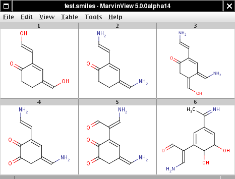

ChemAxon's concurrent framework is based on the
Java 5.0 java.util.concurrent API.
There are three examples which show code samples making use of ChemAxon's concurrent framework.
The common code is written in ConcurrentPluginApplication:
it starts a ConcurrentProcessor with a
specified InputProducer and
WorkUnitFactory. The
InputProducer is supposed to produce the
plugin inputs: the input molecules and possibly the plugin objects which perform the calculation.
The WorkUnit objects produced by the
WorkUnitFactory are run concurrently
by the ConcurrentProcessor and
supposed to execute the plugin calculation (the CalculatorPlugin.run() method). Finally, the results are collected in
ConcurrentPluginApplication.consume(Object result) in the main thread. It is important
to process the results in a single thread so that the order of the results was the same as the order of the
input molecules.
Our examples show different ways to provide the inputs and outputs for the concurrent processor.
Input molecules are read from System.in if the molecule file is omitted.
The following API is used:
In the following examples we use the test.smiles input molecule file:
|  |
7.4).
Usage: java logDPluginApplication [pH] [molFile] Example: java logDPluginApplication 5.2 test.smiles
Usage: java pKaPluginApplication [count] [molFile] Example: java pKaPluginApplication 2 test.smiles
consume(Object result) (in the main thread) gets the tautomers from the plugin and writes the tautomer with minimal logD. Finally, it returns the plugin object for reuse to the input producer.
The input is the plugin object together with the molecule, the output is the plugin object.
The application writes the tautomer with minimal logD.
The number of plugin objects to be generated initially can be specified (10 if omitted).
Usage: java TautomerizationPluginApplication [pluginCount] [molFile] Example: java TautomerizationPluginApplication 16 test.smiles
The above examples can also be run by run.sh (Linux/UNIX) or RUN.BAT (Windows).